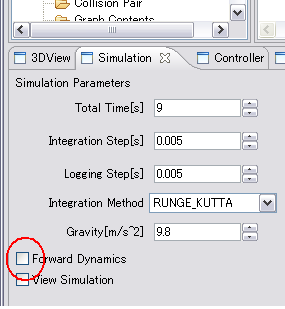

Overview
In this section we describe about the simulation which does not perform dynamics calculation
This sample is sample/project/SampleRH2.xml. A setup of a simulationClick a Simulation view and uncheck Forward Dynamics.
 Specification of the control mode of a joint becomes invalid. Creation of a controllerThe source file of a controller is in sample/controller/SampleRH2.
A controller is a simple thing which reads the position and posture of a route link from the file created beforehand, and outputs them. |